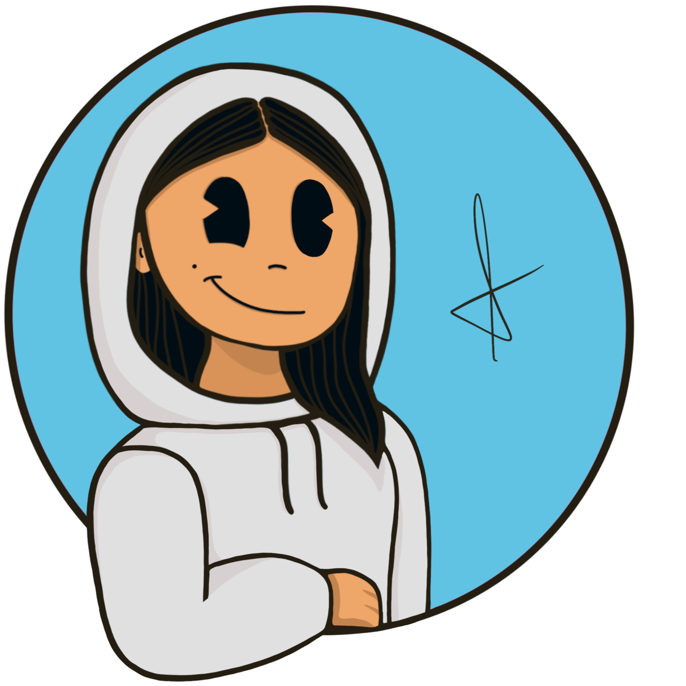

Hi! I'm An
I'm a web and game developer. I'm also a designer with an illustration hobby. I am excited to find opportunities where I can continue expanding my knowledge and collaborate with other professionals.
Experience
-
Designer at LambdaClassIn my main role, I was responsible for designing webs and web apps. All of which I implemented as a front-end dev. Additionally, the company frequently required visual presentations and decks for conventions. I also participated in a t-shit design open contest in behalf of the company for a partner brand where I ranked among the top three merchandise designers.
-
Frontend Developer at LambdaClassDuring my time at LambdaClass, I developed a variety of websites, web apps, a roulette game and a virtual wallet extension for Google Chrome.Web for oncology hospital management system
 Web for a pharmaceutical brand
Web for minor league soccer management system
Web3 Platforms for various Clients
Web3 Roulette Game
Google Chrome Wallet Extension
Web for a pharmaceutical brand
Web for minor league soccer management system
Web3 Platforms for various Clients
Web3 Roulette Game
Google Chrome Wallet Extension
-
Game Developer at LambdaClassDeveloped two games so far: a 3D PvP game and a 2D platform game.3D Game – Unity
2D Game – Unity
-
Project Manager at LambdaClassI carried out this role as a substitute for managers in various projects within the company.
-
Mentor at LambdaClassMy task in this role is to guide new employees in their social integration and understanding of corporate operations, as well as provide technical support in the languages and tools necessary for their tasks.

Tools
Frontend
- HTML
- CSS
- JavaScript
- Node.js
- React.js
- ReScript
- TypeScript
- Git
- GitHub
Game
- Unity
- C#
Multimedia
- Processing
Designer
- Figma
- Illustrator
- Photoshop
Manager
- Notion
- Trello
- Clickup
Education
-
Complete Unity 2D DeveloperGameDev.tv - [2024]
-
Unity EssentialsUnity 3d - [2023]
-
CSS for JavaScript DevelopersJosh Comeau’s course - [2021]
-
Technical Degree in Multimedia ArtsUniversidad Nacional de las Artes (UNA) - [2019 – 2021]
-
Full-Stack Web ProgrammingDigital House - [2019]
-
CBC – Graphic DesignUniversidad de Buenos Aires (UBA) - [2016 – 2017]
-
First Certificate in EnglishUniversity of Cambridge, UK - [2014]
-
School Exchange to Winnipeg, CanadaMiles MacDonell Collegiate- [2014]